I've acquired a lot of information on the Nintendo Super System over the years. I'm trying to consolidate as much as possible on this page. I'll continue to go through my notes and add new stuff as time allows.
(click for larger logo)
Table of contents
SNES cartridge to Nintendo Super System adapter
Super System/SNES repair logs/resources
3D printable APU standoffs (Thingiverse)
BIOS version differences
Nintendo Super System Cartridge Pinout
Gray screen (and possibly audio problem) fix
SD2SNES compatibility mod
Nintendo Super System BIOS version differences
v1
For free play- you must always press "Restart Game" to add credits.
When starting a game, it uses all credits.
"Restart Game" just resets the current game (can't exit to game select menu).
Doesn't appear to support "skill" mode.
v2
For free play- with a single cart, just press A to start. With multiple carts, you must press "Restart Game" to add credits.
When starting a game, it uses all credits.
"Restart Game" just resets the current game (can't exit to game select menu).
Supports "skill" mode.
v3
For free play- with a single cart, just press A to start. With multiple carts, you must press "Restart Game" to add credits.
When starting a game, it uses only 1 credit (it automatically takes the next credit, if available, when time runs out).
"Restart Game" exits to the game select menu (you lose the remaining time from that credit).
Supports "skill" mode.
Nintendo Super System Cartridge Pinout
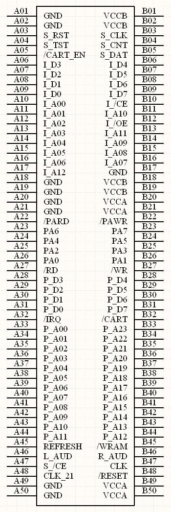
P_* are Program pins
I_* are Instruction pins
S_* are Security PROM pins
/CART_EN signals the active NSS slot
VCCB is the NSS +5V (which is always active). VCCA is the +5V for the SNES half, which is switched on by Q1 (2SA1442 PNP BJT) only when the SNES half is active.
All pins of the 3 slots are connected together except A05, A47, and B10.
Nintendo Super System Gray Screen (and possible sound problem) Fix
If you just want to see what you need to replace, click here.
Introduction
Due to a design flaw in the Nintendo Super System motherboard, many systems have a problem where the video will be washed out, or sometimes show a completely gray screen... which sometimes gets better, or snaps in and out, after warming up for a long time. With this problem, you can still hear the game playing, but just can't see it. This is due to a drop in voltage to the video mixing circuit, which is supposed to run from 12V. There's a 10 ohm 1/8W resistor in series, which due to large inrush current to the large capacitor, quickly goes out of spec to several tens to 100 ohms.
There is a different, but related problem with audio. Another 10 ohm 1/8W resistor, with even larger inrush current, due to a larger capacitor... though this one seems less prone to causing problems, since the circuit uses less steady state current (so the voltage drops less across the out of spec resistor).
Analysis
I wanted to fix the problem, but I wanted to make sure I understood exactly what was happening first. Most motherboards I've seen, whether they're exhibiting problems or not, have had both of these resistors well outside of the 5% specification. As the resistor burns, it becomes more resistive, letting less current through, and in turn dissipating less power (P=I^2*R)... typically preventing itself from burning completely open-circuit. The steady state current of both of these circuits is pretty small, so once the capacitor is charged, the voltage drop across even the out of spec resistor is still fairly low. The actual voltage of the 12V power supply rail can have an effect on it as well.
I put some higher current handling resistors in place, and took some measurements of the voltage drop across the resistor, both during the inrush to the discharged capacitor, as well as steady state, to determine the current, and power dissipated in the resistor. The results are surprising. Below are the measurements... the yellow and blue traces are the voltages on each side of the resistor, and the red trace is the voltage dropped across the resistor (calculate power directly from the red trace with P=V^2/R).
During inrush to the video circuit, the current peaks at around 1A (10 WATTS!), and still above 2W 30ms or so later.
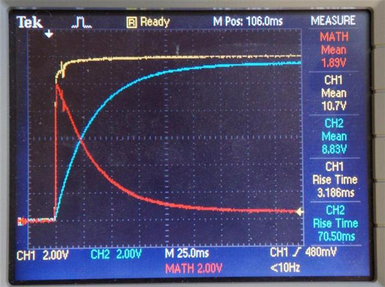
Zoomed into the initial spike:
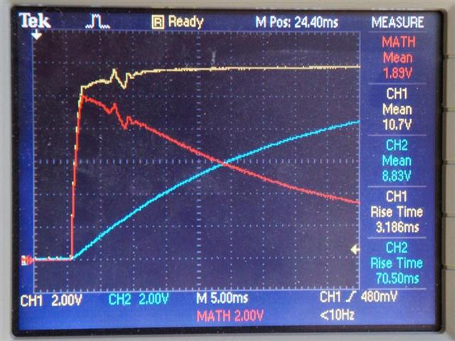
Steady state, less than 50mA (less than 25mW dissipated in the resistor):
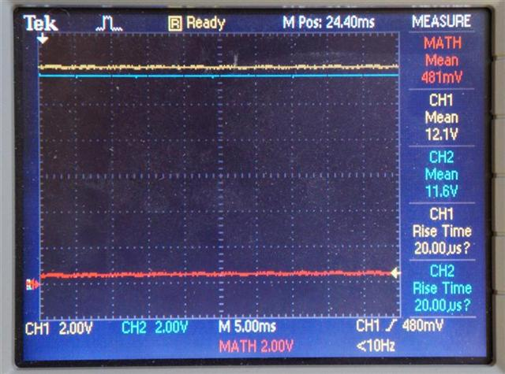
The inrush to the audio circuit is very similar (again about 10W), though slightly worse, due to the larger capacitor (above 2W for about 40ms).
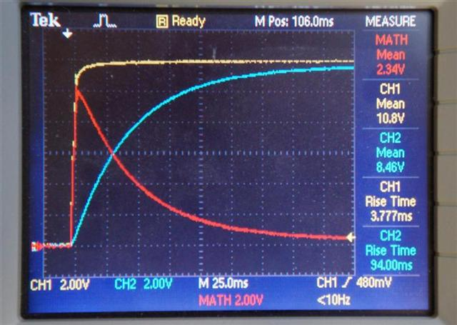
Zoomed into the initial spike:
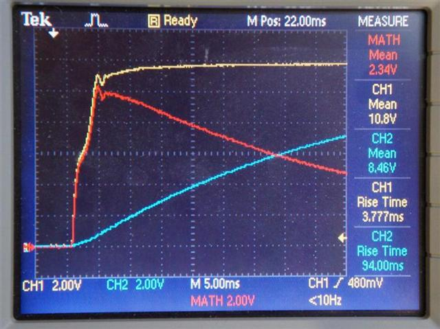
Steady state, less than 30mA (less than 10mW dissipated in the resistor):
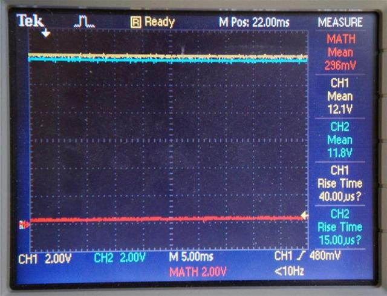
All resistors have some surge current capability, so going above the rated wattage for a small fraction of time can be tolerated in some cases. The original resistors are standard 1/8W 0805, similar to the Panasonic ERJ series (dashed line below):
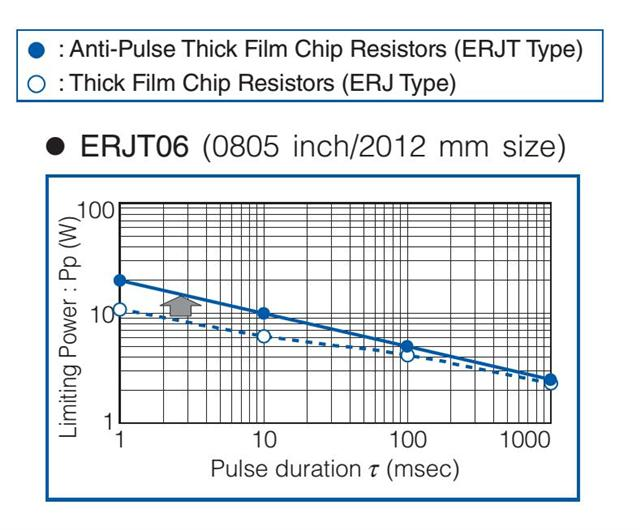
As you can see, they can tolerate 10W for 1ms, or 6W for 10ms. Unfortunately, this is exceeded in both the video and audio circuits. This is the reason for the large number of failures.
As a test, I put slightly weaker than standard resistors in place (10 ohm 1/10W 0603 ERJ resistors). After every power cycle, I noticed the resistance increasing by a little bit... and after about 15 power cycles, the video resistor was approximately 30 ohms, and I began noticing video problems.
Fix
There are several possible fixes, though the one I recommend is simply replacing the original 10 ohm 1/8W 0805 resistor with a 10 ohm 1/2W 0805 Anti-Surge resistor. These resistors are designed to handle large surge currents, like the ones seen here, without degradation. Below is a graph of the power handling of the Panasonic ERJP series Anti-Surge resistors:
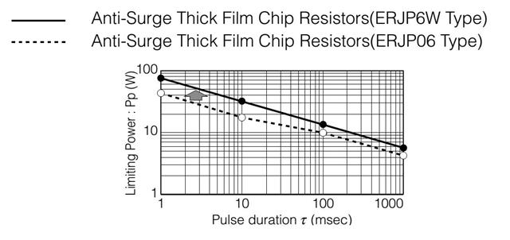
Note that the ERJP06 can handle almost 20W for 10ms, and the ERJP6W can handle over 30W for 10ms. Both of these give you quite a bit of safety margin (I'd recommend the ERJP6W if it's available, since it doesn't cost much more).
http://www.digikey.com/product-detail/en/ERJ-P6WJ100V/P16930CT-ND/4964969
http://www.digikey.com/product-detail/en/ERJ-P06J100V/P10ADCT-ND/525435
Another option is the ERJP08, which is a larger (1206 sized) resistor, but will still fit on the original resistor pads. I don't have a graph for its surge current capability, but it will be higher than the ERJP06, and in general, a 1206 resistor looks to have approximately double the surge current capability of an 0805 resistor (probably similar to the ERJP6W).
http://www.digikey.com/product-detail/en/ERJ-P08J100V/P10ALCT-ND/525555
Simply swapping the original 1/8W resistors (R71 and R101) with 1/2W ERJP Anti-Surge resistors should get your game back up and running, and keep it happy for a long time to come.
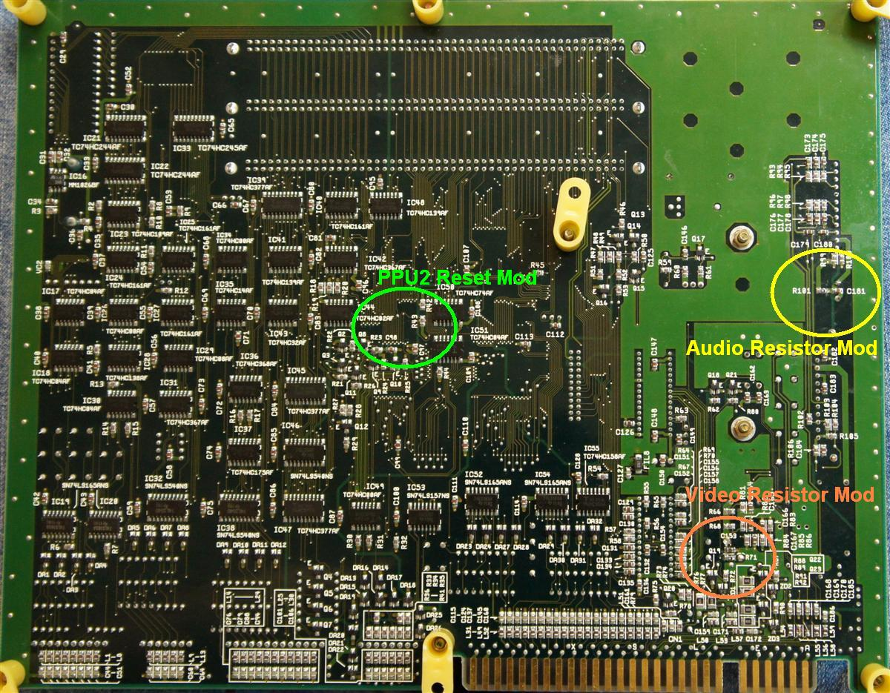
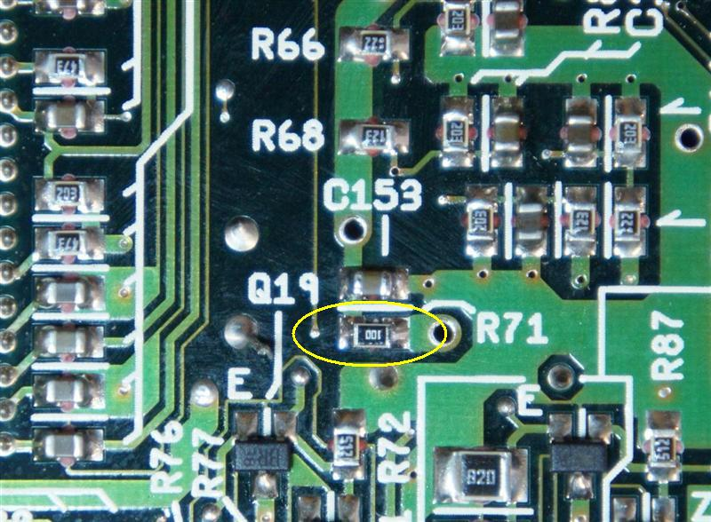
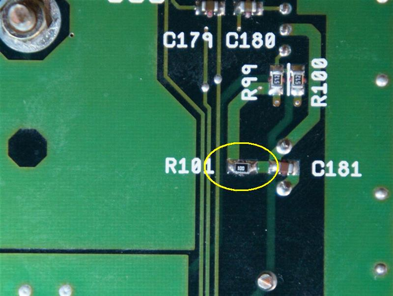
Nintendo Super System modification for SD2SNES compatibility
For the most part, the Nintendo Super System is identical to, and fully compatible with the SNES. There are a few obvious differences, like the lack of CIC on the motherboard, the lack of expansion port, and lack of controller ports (so there will be no arcade mouse or Super Scope)... but there are a few subtle differences as well. One is that the /RESET line going to the cartridges is driven directly by the PPU2 on the Super System, while on the SNES, it's driven weakly through a 2.2K resistor (maybe 1K, on some SNES revisions).
This causes a problem with the SD2SNES (and maybe the Super EverDrive), which resets the system to load the menu and games by pulling the /RESET line low for a short period of time. On the SNES, this is fine, because the SD2SNES easily overpowers the weak /RESET output from the PPU2. On the Super System, both the PPU2 and SD2SNES are fighting each other for control (and apparently the PPU2 wins).
To make the Super System compatible with the SD2SNES, you need to CAREFULLY cut the PPU2 /RESET output trace, and install a 2.2K resistor in series. This will make the circuit the same as an SNES motherboard.
In my case, I cut the trace on the bottom of the board, near the via going up to the PPU2 /RESET output pin, and scraped away some of the solder mask on the trace to expose the copper. I then soldered a 2.2K 0402 resistor across the cut trace. The via already had solder in it, and I'd recommend soldering to the via for extra stability (the traces are thin, and probably not very strong). With the resistor properly soldered in place, everything should function normally, and now compatible with the SD2SNES.
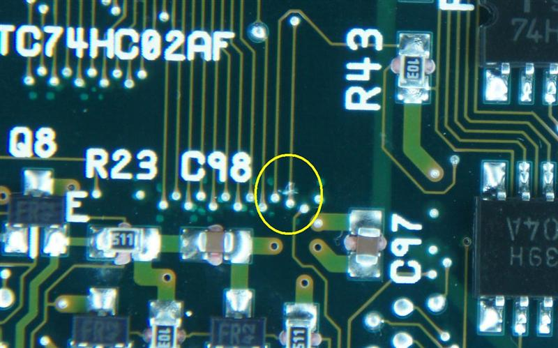
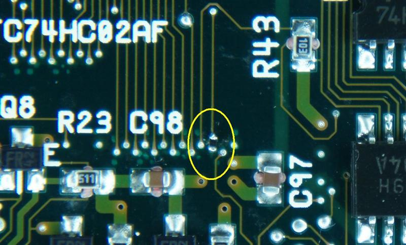